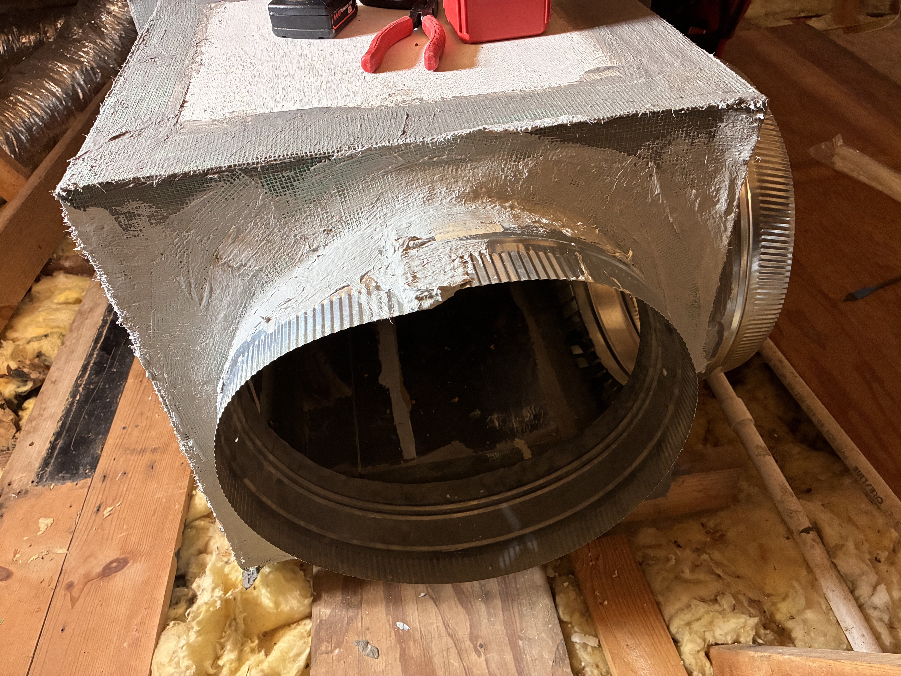
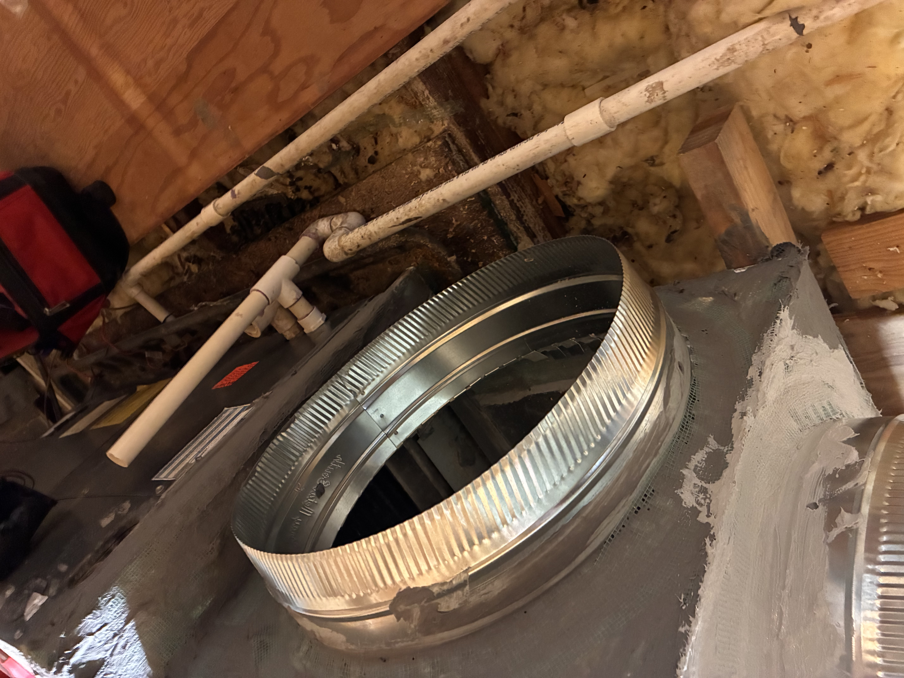

My Now Page
Here's what I'm doing now, how I feel about it, whether or not I ate my own (Bulletproof) dog food, and what I might have learned. Read. Enjoy. Learn.
Thu, Oct 22, 2026
Jumped up early to move projects forward. Got the A/C as far forward as I could, getting the short ducts installed on the return air plenum and sealed with mastic. That will have to dry until Saturday. Also rejoined the main duct for the living room, which had gotten severed somewhere along the way. Tomorrow, I'll need to remove the sheet rock and clear some of the attic trash so I can see from below more about where the leak might have been. Can't fire it back up until I know I've fixed that, but the work shown here had to be done anyway – the previous plenum – cheaply made out of cardboard, basically – had pulled completely loose.


Wed, Oct 21, 2026
09:06 AM
Yesterday was spent helping a friend. Those are not subtracted from our alloted time on Earth. Today is SSA payday. Paid bills – or set them up to debit – and now off to the grocery.
Mon, Oct 19, 2026
New Definitions
- Continental Mind: Daniel Kahneman's System 2, or Ken Atchity's "Continent of Reason." It's the non-impulsive, everything-better-be-in-order, semi-logical mind that drives you nuts at every turn.
- Island Brain: Kahneman's System 1, or Ken Atchity's "Islands." The fanciful, whimsical, shiny-object-seeking, great-idea-chasing part of your brain.
- Managing Editor: The other, less explainable part of your brain that mediates between the two; straight rip-off from Ken Atchity. It's the piece that orchestrates Bulletproof Focus by setting up the ball so the Continental Mind can spike it.
- Which parts of the brain anatomy are these? I have no freakin' idea. And I don't care. No lectures, please.
1:47 PM
- Now Thing: Leisurely breakfast. Yeah, so I only eat when I'm hungry and/or when it's not occluded by something else. Otherwise I'd go back to being "Mr. Snacks." Eggs, sausage, toast, all prepared in less than 10 minutes by actual cooking. No, actual cooking does not really take that long, most of the time.
12:31 PM
- Now Thing: Spent a couple of hours on the central air system, until it started getting too hot. Got the new return air nearly complete and sealed, just one more short duct to attach and seal (tomorrow?). Had to shore up a spot in the decking; started to go all complicated and do finish carpentry (in a crawlspace attic?!!?). Instead, I just repurposed a board as a span, set it down on top of the split in the decking, screwed it to two floor joists, and then screwed through to grab the plywood. You can step there now.
- Emologent: It doesn't match my dream of having a clean Navy engine room as my attic. I don't know why I have that dream. What would it prove, and who would see it? Not a clue. Skip it, Continental Mind, it's not for us.
- Dog Food: It's The Old Two-Step popping up again. I just had to keep asking myself, "How can I solve this problem in just two steps, given that it's not a critical issue?" Gotta remember that.
- Learning? Stop and think a bit before you go trying to build a battleship when you just need a small log raft to get you across, and then you'll never come this way again, most likely. Stop overthinking.
10:10 AM
- Now Thing: Clearly, I'm gonna need a way to update on my phone. I'm not breaking out the MacBook every time I want to update something. I took a few minutes to at least make it possible to update this easily from the phone. Yes, I know the attic needs work. Screw it, the iron is hot.
- What I Did: Simplest thing possible: just added a way to get the entire journal in a giant HTML "pre" block.
- Emologent: "Oh, you should be writing code and coming up with huge functions that do this for you." No, I shouldn't.
- Dog Food: I used the Old Two-Step; just took the simplest possible path in the smallest number of steps to make this part of the problem go away.
- Learning? I didn't know that this was an application of the Two-Step Rule, but it doggone sure is. I need to add the idea that "can i do this in 2 minutes / 2 steps?"
9:56 AM
- *Now Thing: Just finished redoing my schedule: NO tasks are now linked to the clock unless there are other people involved. They're just in a rotation by "priority" – which is really just a large number (e.g., [#027] task) that will sort correctly in alpha order.
- Emologent: I kept beating myself up mentally, the whole time, because I didn't go to bed at 9 PM and jump up at 5 and get going on the central air repairs in the attic, while the temps are good.
- Dog Food: I used The Momentum Override, over the serious objections of my Continental Mind. I will not be bullied into neat, orderly failure.
- Learned? When the creative currents are flowing, everything else can take the back seat. Or said as a very distorted old saying, "When Opportunity knocks, answer the door."